摘要： 发个请求也不简单啊。
Fundebug经授权转载，版权归原作者所有。
大多数情况下，在前端发起一个网络请求我们只需关注下面几点：
url，请求方式）cookie设置form表单、ifream、刷新页面Ajax - 异步网络请求的开山鼻祖jQuery - 一个时代fetch - Ajax的替代者axios、request等众多开源库Ajax的出现解决了什么问题Ajax如何使用jQuery的网络请求方式fetch的用法以及坑点fetch带着以上这些问题、关注点我们对几种网络请求进行一次全面的分析。
在Ajax出现之前，web程序是这样工作的：
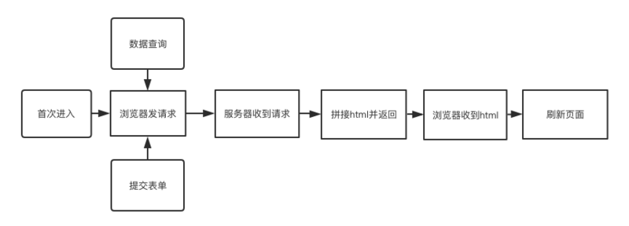
这种交互的的缺陷是显而易见的，任何和服务器的交互都需要刷新页面，用户体验非常差，Ajax的出现解决了这个问题。Ajax全称Asynchronous JavaScript + XML（异步JavaScript和XML）
使用Ajax，网页应用能够快速地将增量更新呈现在用户界面上，而不需要重载（刷新）整个页面。
Ajax本身不是一种新技术，而是用来描述一种使用现有技术集合实现的一个技术方案，浏览器的XMLHttpRequest是实现Ajax最重要的对象（IE6以下使用ActiveXObject）。
尽管X在Ajax中代表XML, 但由于JSON的许多优势，比如更加轻量以及作为Javascript的一部分，目前JSON的使用比XML更加普遍。
这里主要分析XMLHttpRequest对象，下面是它的一段基础使用：
var xhr = new XMLHttpRequest();
xhr.open('post','www.xxx.com',true)
// 接收返回值
xhr.onreadystatechange = function(){
if(xhr.readyState === 4 ){
if(xhr.status >= 200 && xhr.status < 300) || xhr.status == 304){
console.log(xhr.responseText);
}
}
}
// 处理请求参数
postData = {"name1":"value1","name2":"value2"};
postData = (function(value){
var dataString = "";
for(var key in value){
dataString += key+"="+value[key]+"&";
};
return dataString;
}(postData));
// 设置请求头
xhr.setRequestHeader("Content-type","application/x-www-form-urlencoded");
// 异常处理
xhr.onerror = function() {
console.log('Network request failed')
}
// 跨域携带cookie
xhr.withCredentials = true;
// 发出请求
xhr.send(postData);下面分别对XMLHttpRequest对象常用的的函数、属性、事件进行分析。
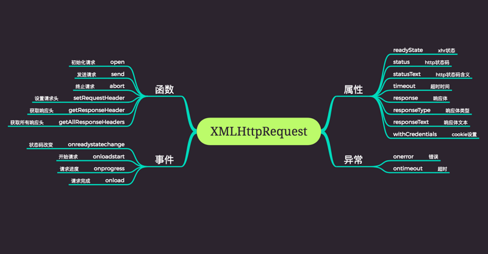
open
用于初始化一个请求，用法：
xhr.open(method, url, async);method：请求方式，如get、posturl：请求的urlasync：是否为异步请求send
用于发送HTTP请求，即调用该方法后HTTP请求才会被真正发出，用法：
xhr.send(param);param：http 请求的参数，可以为string、Blob等类型。abort
用于终止一个ajax请求，调用此方法后readyState将被设置为0，用法：
xhr.abort();setRequestHeader
用于设置HTTP请求头，此方法必须在open()方法和send()之间调用，用法：
xhr.setRequestHeader(header, value);getResponseHeader
用于获取http返回头，如果在返回头中有多个一样的名称，那么返回的值就会是用逗号和空格将值分隔的字符串，用法：
var header = xhr.getResponseHeader(name);readyState
用来标识当前XMLHttpRequest对象所处的状态，XMLHttpRequest对象总是位于下列状态中的一个：
| 值 | 状态 | 描述 |
|---|---|---|
| 0 | UNSENT |
代理被创建，但尚未调用 open() 方法。 |
| 1 | OPENED |
open() 方法已经被调用。 |
| 2 | HEADERS_RECEIVED |
send()方法已经被调用，并且头部和状态已经可获得。 |
| 3 | LOADING |
下载中； responseText 属性已经包含部分数据。 |
| 4 | DONE |
下载操作已完成。 |
status
表示http请求的状态, 初始值为0。如果服务器没有显式地指定状态码, 那么status将被设置为默认值, 即200。
responseType
表示响应的数据类型，并允许我们手动设置，如果为空，默认为text类型，可以有下面的取值：
| 值 | 描述 |
|---|---|
"" |
将 responseType设为空字符串与设置为"text"相同， 是默认类型 （实际上是 DOMString）。 |
"arraybuffer" |
response 是一个包含二进制数据的JavaScript ArrayBuffer 。 |
"blob" |
response是一个包含二进制数据的 Blob 对象 。 |
"document" |
response 是一个HTML Document或XML XMLDocument，这取决于接收到的数据的 MIME 类型。 |
"json" |
response 是一个 JavaScript 对象。这个对象是通过将接收到的数据类型视为JSON解析得到的。 |
"text" |
response是包含在DOMString对象中的文本。 |
response
返回响应的正文，返回的类型由上面的responseType决定。
withCredentials
ajax请求默认会携带同源请求的cookie，而跨域请求则不会携带cookie，设置xhr的withCredentials的属性为true将允许携带跨域cookie。
onreadystatechange
xhr.onreadystatechange = callback;当readyState属性发生变化时，callback 会被触发。
onloadstart
xhr.onloadstart = callback;在ajax请求发送之前（readyState==1后, readyState==2前），callback会被触发。
onprogress
xhr.onprogress = function(event) {
console.log(event.loaded / event.total);
};
回调函数可以获取资源总大小total，已经加载的资源大小loaded，用这两个值可以计算加载进度。
onload
xhr.onload = callback;
当一个资源及其依赖资源已完成加载时，将触发callback，通常我们会在onload事件中处理返回值。
onerror
xhr.onerror = callback;
当ajax资源加载失败时会触发callback。
ontimeout
xhr.ontimeout = callback;
当进度由于预定时间到期而终止时，会触发callback，超时时间可使用timeout属性进行设置。
推荐大家使用Fundebug，一款很好用的BUG监控工具~
在很长一段时间里，人们使用jQuery提供的ajax封装进行网络请求，包括$.ajax、$.get、$.post等，这几个方法放到现在，我依然觉得很实用。
$.ajax({
dataType: 'json', // 设置返回值类型
contentType: 'application/json', // 设置参数类型
headers: {'Content-Type','application/json'},// 设置请求头
xhrFields: { withCredentials: true }, // 跨域携带cookie
data: JSON.stringify({a: [{b:1, a:1}]}), // 传递参数
error:function(xhr,status){ // 错误处理
console.log(xhr,status);
},
success: function (data,status) { // 获取结果
console.log(data,status);
}
})
$.ajax只接收一个参数，这个参数接收一系列配置，其自己封装了一个jqXHR对象，有兴趣可以阅读一下jQuary-ajax 源码
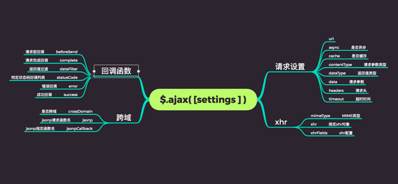
常用配置：
url
当前页地址。发送请求的地址。
type
类型：String 请求方式 ("POST" 或"GET")， 默认为 "GET"。注意：其它HTTP请求方法，如PUT和 DELETE也可以使用，但仅部分浏览器支持。
timeout
类型：Number设置请求超时时间（毫秒）。此设置将覆盖全局设置。
success
类型：Function 请求成功后的回调函数。
jsonp
在一个jsonp请求中重写回调函数的名字。这个值用来替代在"callback=?"这种GET或POST请求中URL参数里的"callback"部分。
error 类型：Function 。请求失败时调用此函数。
注意：源码里对错误的判定：
isSuccess = (status >= 200 && status < 300) || status === 304;
返回值除了这几个状态码都会进error回调。
dataType
"xml": 返回 XML 文档，可用 jQuery 处理。
"html": 返回纯文本 HTML 信息；包含的 script 标签会在插入 dom 时执行。
"script": 返回纯文本 JavaScript 代码。不会自动缓存结果。除非设置了 "cache" 参数。注意：在远程请求时(不在同一个域下)，所有 POST 请求都将转为 GET 请求。（因为将使用 DOM 的 script标签来加载）
"json": 返回 JSON 数据 。
"jsonp": JSONP 格式。使用 JSONP 形式调用函数时，如 "myurl?callback=?" jQuery 将自动替换 ? 为正确的函数名，以执行回调函数。
"text": 返回纯文本字符串
data
类型：String 使用JSON.stringify转码
complete
类型：Function请求完成后回调函数 (请求成功或失败之后均调用)。
async
类型：Boolean 默认值:true。默认设置下，所有请求均为异步请求。如果需要发送同步请求，请将此选项设置为 false。
contentType
类型：String默认值: "application/x-www-form-urlencoded"。发送信息至服务器时内容编码类型。
键值对这样组织在一般的情况下是没有什么问题的，这里说的一般是，不带嵌套类型JSON，也就是 简单的JSON，形如这样：
{
a: 1,
b: 2,
c: 3
}
但是在一些复杂的情况下就有问题了。 例如在 Ajax中你要传一个复杂的 json 对像，也就说是对象嵌数组，数组中包括对象，你这样传：application/x-www-form-urlencoded 这种形式是没有办法将复杂的JSON组织成键值对形式。
{
data: {
a: [
{
x: 2
}
];
}
}
可以用如下方式传递复杂的json对象
$.ajax({
dataType: "json",
contentType: "application/json",
data: JSON.stringify({ a: [{ b: 1, a: 1 }] })
});
近年来前端MV*的发展壮大，人们越来越少的使用jQuery，我们不可能单独为了使用jQuery的Ajax api来单独引入他，无可避免的，我们需要寻找新的技术方案。
尤雨溪在他的文档中推荐大家用axios进行网络请求。axios基于Promise对原生的XHR进行了非常全面的封装，使用方式也非常的优雅。另外，axios同样提供了在node环境下的支持，可谓是网络请求的首选方案。
未来必定还会出现更优秀的封装，他们有非常周全的考虑以及详细的文档，这里我们不多做考究，我们把关注的重点放在更底层的 APIfetch。
Fetch API是一个用用于访问和操纵 HTTP 管道的强大的原生 API。
这种功能以前是使用 XMLHttpRequest 实现的。Fetch 提供了一个更好的替代方法，可以很容易地被其他技术使用，例如 Service Workers。Fetch 还提供了单个逻辑位置来定义其他 HTTP 相关概念，例如 CORS 和 HTTP 的扩展。
可见fetch是作为XMLHttpRequest的替代品出现的。
使用fetch，你不需要再额外加载一个外部资源。但它还没有被浏览器完全支持，所以你仍然需要一个polyfill。
一个基本的 fetch 请求：
const options = {
method: "POST", // 请求参数
headers: { "Content-Type": "application/json" }, // 设置请求头
body: JSON.stringify({ name: "123" }), // 请求参数
credentials: "same-origin", // cookie设置
mode: "cors" // 跨域
};
fetch("http://www.xxx.com")
.then(function(response) {
return response.json();
})
.then(function(myJson) {
console.log(myJson); // 响应数据
})
.catch(function(err) {
console.log(err); // 异常处理
});
Fetch API提供了一个全局的fetch()方法，以及几个辅助对象来发起一个网络请求。
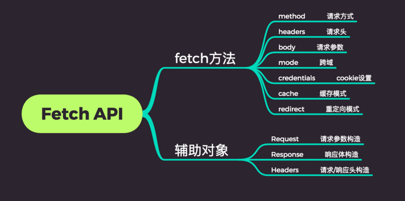
fetch()fetch()方法用于发起获取资源的请求。它返回一个promise，这个 promise 会在请求响应后被 resolve，并传回 Response 对象。
Headers可以通过Headers()构造函数来创建一个你自己的headers对象，相当于 response/request 的头信息，可以使你查询到这些头信息，或者针对不同的结果做不同的操作。
var myHeaders = new Headers();
myHeaders.append("Content-Type", "text/plain");
Request通过Request()构造函数可以创建一个Request对象，这个对象可以作为fetch函数的第二个参数。
Response在fetch()处理完promises之后返回一个Response实例，也可以手动创建一个Response实例。
由于fetch是一个非常底层的API，所以我们无法进一步的探究它的底层，但是我们可以借助它的polyfill探究它的基本原理，并找出其中的坑点。
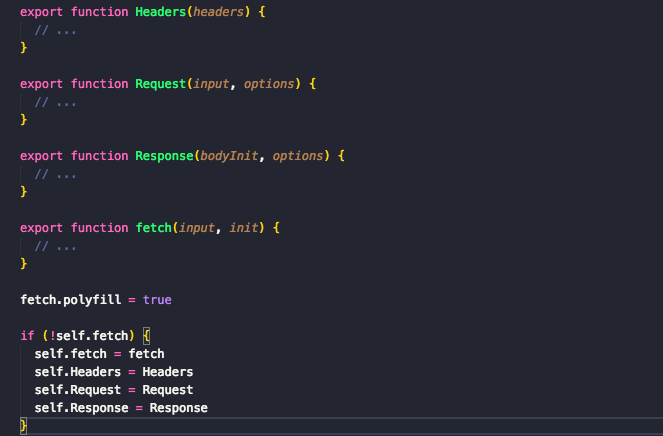
由代码可见，polyfill主要对Fetch API 提供的四大对象进行了封装：
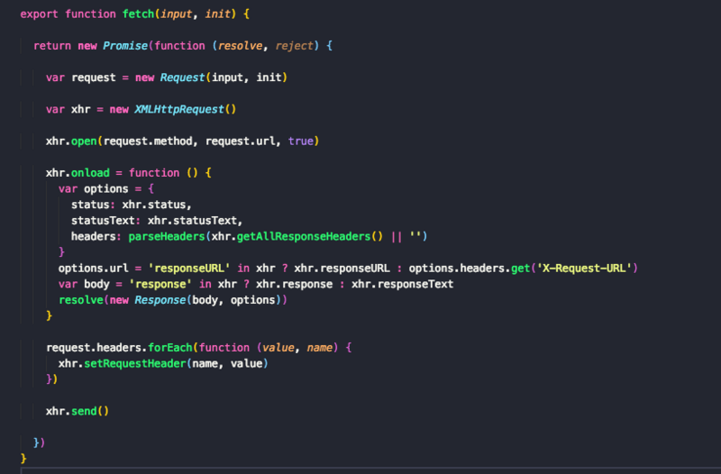
代码非常清晰：
Promise对象并返回Request对象XMLHttpRequest对象Request对象中的请求url，请求方发，open一个xhr请求，并将Request对象中存储的headers取出赋给 xhrxhr onload后取出response的status、headers、body封装Response对象，调用resolve。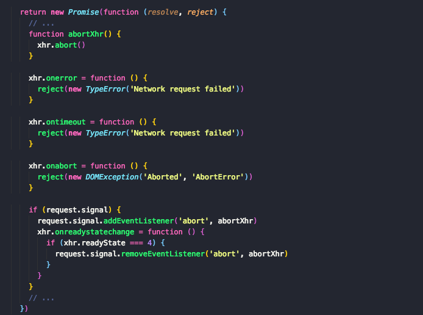
可以发现，调用reject有三种可能：
注意：当和服务器建立简介，并收到服务器的异常状态码如404、500等并不能触发onerror。当网络故障时或请求被阻止时，才会标记为 reject，如跨域、url不存在，网络异常等会触发onerror。
所以使用 fetch 当接收到异常状态码都是会进入 then 而不是 catch。这些错误请求往往要手动处理。
可以在request参数中传入signal对象，并对signal对象添加abort事件监听，当xhr.readyState变为4（响应内容解析完成）后将 signal 对象的 abort 事件监听移除掉。
这表示，在一个fetch请求结束之前可以调用signal.abort将其终止。在浏览器中可以使用AbortController()构造函数创建一个控制器，然后使用AbortController.signal属性
这是一个实验中的功能，此功能某些浏览器尚在开发中
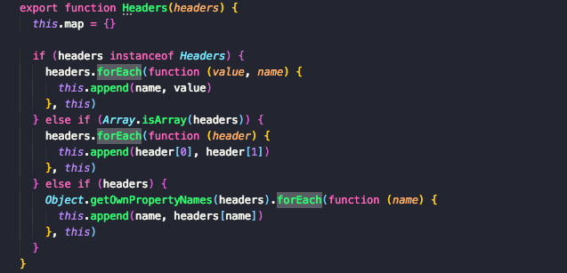
在 header 对象中维护了一个map对象，构造函数中可以传入Header对象、数组、普通对象类型的header，并将所有的值维护到map中。
之前在fetch函数中看到调用了header的forEach方法，下面是它的实现：
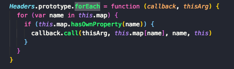
可见header的遍历即其内部map的遍历。
另外Header还提供了append、delete、get、set等方法，都是对其内部的map对象进行操作。
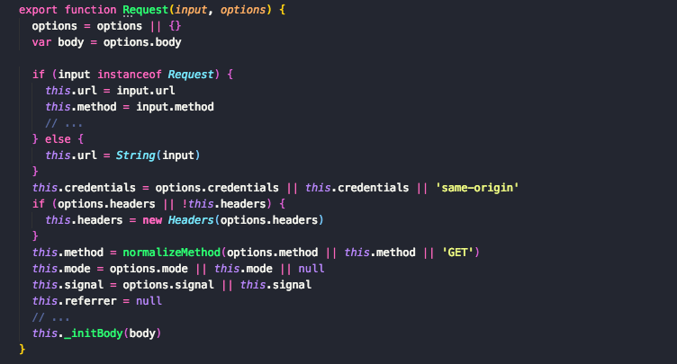
Request对象接收的两个参数即fetch函数接收的两个参数，第一个参数可以直接传递url，也可以传递一个构造好的request对象。第二个参数即控制不同配置的option对象。
可以传入credentials、headers、method、mode、signal、referrer等属性。
这里注意：
headers被当作Headers构造函数的参数来构造 header 对象。fetch 函数中还有如下的代码：
if (request.credentials === "include") {
xhr.withCredentials = true;
} else if (request.credentials === "omit") {
xhr.withCredentials = false;
}
默认的credentials类型为same-origin,即可携带同源请求的 coodkie。
然后我发现这里 polyfill 的实现和MDN-使用 Fetch以及很多资料是不一致的：
mdn: 默认情况下，fetch 不会从服务端发送或接收任何 cookies
于是我分别实验了下使用polyfill和使用原生fetch携带 cookie 的情况，发现在不设置credentials的情况下居然都是默认携带同源cookie的，这和文档的说明说不一致的，查阅了许多资料后都是说fetch默认不会携带 cookie，下面是使用原生fetch在浏览器进行请求的情况：
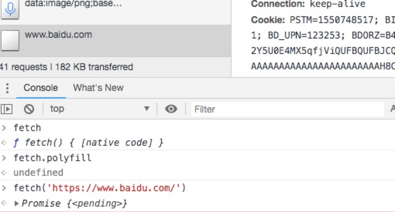
然后我发现在已经指出新版浏览器credentials默认值已更改为same-origin，旧版依然是omit。
确实MDN-使用 Fetch这里的文档更新的有些不及时，误人子弟了…
Response对象是fetch调用成功后的返回值：
回顾下fetch中对Response`的操作：
xhr.onload = function() {
var options = {
status: xhr.status,
statusText: xhr.statusText,
headers: parseHeaders(xhr.getAllResponseHeaders() || "")
};
options.url =
"responseURL" in xhr
? xhr.responseURL
: options.headers.get("X-Request-URL");
var body = "response" in xhr ? xhr.response : xhr.responseText;
resolve(new Response(body, options));
};
Response构造函数：
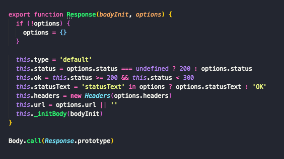
可见在构造函数中主要对options中的status、statusText、headers、url等分别做了处理并挂载到Response对象上。
构造函数里面并没有对responseText的明确处理，最后交给了_initBody函数处理，而Response并没有主动声明_initBody属性，代码最后使用Response调用了Body函数，实际上_initBody函数是通过Body函数挂载到Response身上的，先来看看_initBody函数：
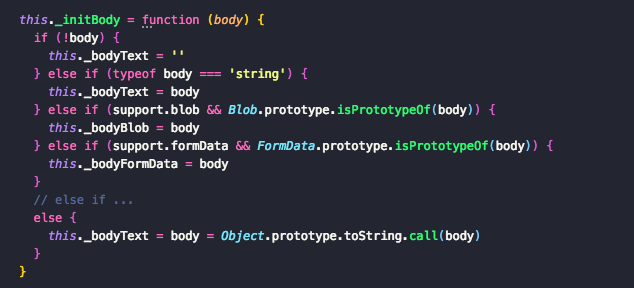
可见，_initBody函数根据xhr.response的类型（Blob、FormData、String...），为不同的参数进行赋值，这些参数在Body方法中得到不同的应用，下面具体看看Body函数还做了哪些其他的操作：
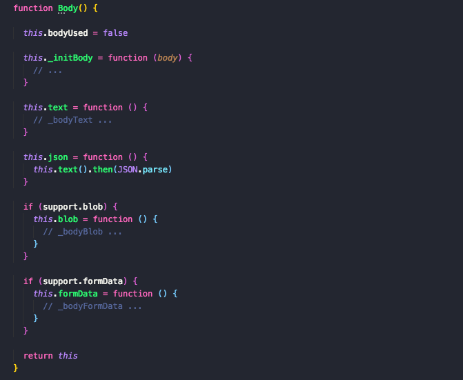
Body函数中还为Response对象挂载了四个函数，text、json、blob、formData，这些函数中的操作就是将_initBody 中得到的不同类型的返回值返回。
这也说明了，在fetch执行完毕后，不能直接在response中获取到返回值而必须调用text()、json()等函数才能获取到返回值。
这里还有一点需要说明：几个函数中都有类似下面的逻辑：
var rejected = consumed(this);
if (rejected) {
return rejected;
}
consumed 函数：
function consumed(body) {
if (body.bodyUsed) {
return Promise.reject(new TypeError("Already read"));
}
body.bodyUsed = true;
}
每次调用text()、json()等函数后会将bodyUsed变量变为true，用来标识返回值已经读取过了，下一次再读取直接抛出TypeError('Already read')。这也遵循了原生fetch的原则：
因为 Responses 对象被设置为了 stream 的方式，所以它们只能被读取一次
VUE的文档中对fetch有下面的描述：
使用
fetch还有很多别的注意事项，这也是为什么大家现阶段还是更喜欢axios多一些。当然这个事情在未来可能会发生改变。
由于fetch是一个非常底层的API，它并没有被进行很多封装，还有许多问题需要处理：
JavaScript对象作为参数cookiejsonp支持传入不同的参数类型：
function stringify(url, data) {
var dataString = url.indexOf("?") == -1 ? "?" : "&";
for (var key in data) {
dataString += key + "=" + data[key] + "&";
}
return dataString;
}
if (request.formData) {
request.body = request.data;
} else if (/^get$/i.test(request.method)) {
request.url = `${request.url}${stringify(request.url, request.data)}`;
} else if (request.form) {
request.headers.set(
"Content-Type",
"application/x-www-form-urlencoded;charset=UTF-8"
);
request.body = stringify(request.data);
} else {
request.headers.set("Content-Type", "application/json;charset=UTF-8");
request.body = JSON.stringify(request.data);
}
fetch在新版浏览器已经开始默认携带同源cookie，但在老版浏览器中不会默认携带，我们需要对他进行统一设置：
request.credentials = "same-origin"; // 同源携带
request.credentials = "include"; // 可跨域携带
当接收到一个代表错误的 HTTP 状态码时，从 fetch()返回的 Promise 不会被标记为 reject， 即使该 HTTP 响应的状态码是 404 或 500。相反，它会将 Promise 状态标记为 resolve （但是会将 resolve 的返回值的 ok 属性设置为 false ），仅当网络故障时或请求被阻止时，才会标记为 reject。
因此我们要对fetch的异常进行统一处理
.then(response => {
if (response.ok) {
return Promise.resolve(response);
}else{
const error = new Error(`请求失败! 状态码: ${response.status}, 失败信息: ${response.statusText}`);
error.response = response;
return Promise.reject(error);
}
});
对不同的返回值类型调用不同的函数接收，这里必须提前判断好类型，不能多次调用获取返回值的方法：
.then(response => {
let contentType = response.headers.get('content-type');
if (contentType.includes('application/json')) {
return response.json();
} else {
return response.text();
}
});
fetch本身没有提供对jsonp的支持，jsonp本身也不属于一种非常好的解决跨域的方式，推荐使用cors或者nginx解决跨域，具体请看下面的章节。
fetch 封装好了，可以愉快的使用了。
嗯，axios 真好用…
谈到网络请求，就不得不提跨域。
浏览器的同源策略限制了从同一个源加载的文档或脚本如何与来自另一个源的资源进行交互。这是一个用于隔离潜在恶意文件的重要安全机制。通常不允许不同源间的读操作。
跨域条件：协议，域名，端口，有一个不同就算跨域。
下面是解决跨域的几种方式：
使用nginx反向代理实现跨域，参考我这篇文章：前端开发者必备的 nginx 知识
CORS是一个W3C标准，全称是”跨域资源共享”（Cross-origin resource sharing）。它允许浏览器向跨源服务器，发出XMLHttpRequest请求。
服务端设置Access-Control-Allow-Origin就可以开启CORS。 该属性表示哪些域名可以访问资源，如果设置通配符则表示所有网站都可以访问资源。
app.all("*", function(req, res, next) {
res.header("Access-Control-Allow-Origin", "*");
res.header("Access-Control-Allow-Headers", "X-Requested-With");
res.header("Access-Control-Allow-Methods", "PUT,POST,GET,DELETE,OPTIONS");
next();
});
script标签的src属性中的链接可以访问跨域的js脚本，利用这个特性，服务端不再返回JSON格式的数据，而是返回一段调用某个函数的js代码，在src中进行了调用，这样实现了跨域。
jquery对jsonp的支持：
$.ajax({
type : "get",
url : "http://xxxx"
dataType: "jsonp",
jsonp:"callback",
jsonpCallback: "doo",
success : function(data) {
console.log(data);
}
});
fetch、axios等并没有直接提供对jsonp的支持，如果需要使用这种方式，我们可以尝试进行手动封装：
(function(window, document) {
"use strict";
var jsonp = function(url, data, callback) {
// 1.将传入的data数据转化为url字符串形式
// {id:1,name:'jack'} => id=1&name=jack
var dataString = url.indexof("?") == -1 ? "?" : "&";
for (var key in data) {
dataString += key + "=" + data[key] + "&";
}
// 2 处理url中的回调函数
// cbFuncName回调函数的名字 ：my_json_cb_名字的前缀 + 随机数（把小数点去掉）
var cbFuncName =
"my_json_cb_" +
Math.random()
.toString()
.replace(".", "");
dataString += "callback=" + cbFuncName;
// 3.创建一个script标签并插入到页面中
var scriptEle = document.createElement("script");
scriptEle.src = url + dataString;
// 4.挂载回调函数
window[cbFuncName] = function(data) {
callback(data);
// 处理完回调函数的数据之后，删除jsonp的script标签
document.body.removeChild(scriptEle);
};
document.body.appendChild(scriptEle);
};
window.$jsonp = jsonp;
})(window, document);
postMessage()方法允许来自不同源的脚本采用异步方式进行有限的通信，可以实现跨文本档、多窗口、跨域消息传递。
//捕获iframe
var domain = "http://scriptandstyle.com";
var iframe = document.getElementById("myIFrame").contentWindow;
//发送消息
setInterval(function() {
var message = "Hello! The time is: " + new Date().getTime();
console.log("blog.local: sending message: " + message);
//send the message and target URI
iframe.postMessage(message, domain);
}, 6000);
//响应事件
window.addEventListener(
"message",
function(event) {
if (event.origin !== "http://davidwalsh.name") return;
console.log("message received: " + event.data, event);
event.source.postMessage("holla back youngin!", event.origin);
},
false
);
postMessage跨域适用于以下场景：同浏览器多窗口间跨域通信、iframe间跨域通信。
WebSocket 是一种双向通信协议，在建立连接之后，WebSocket的 server与 client都能主动向对方发送或接收数据而不受同源策略的限制。
function WebSocketTest() {
if ("WebSocket" in window) {
alert("您的浏览器支持 WebSocket!");
// 打开一个 web socket
var ws = new WebSocket("ws://localhost:3000/abcd");
ws.onopen = function() {
// Web Socket 已连接上，使用 send() 方法发送数据
ws.send("发送数据");
alert("数据发送中...");
};
ws.onmessage = function(evt) {
var received_msg = evt.data;
alert("数据已接收...");
};
ws.onclose = function() {
// 关闭 websocket
alert("连接已关闭...");
};
} else {
// 浏览器不支持 WebSocket
alert("您的浏览器不支持 WebSocket!");
}
}
文中如有错误，欢迎在评论区指正，谢谢阅读。